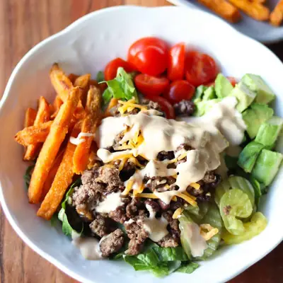

Hamburger Bowl

Ingredients
- 2 medium sweet potatoes
- 2 tablespoons olive oil
- 1 tablespoon olive oil
- 1 small yellow onion, diced
- 1 pound lean ground beef
- 15 ounce can black beans, rinsed and drained
- shredded cheddar cheese (optional)
- 1 teaspoon dried oregano
- 1 teaspoon garlic powder
- 1 teaspoon smoked paprika
- salt and pepper to taste
- Romaine lettuce, chopped or shredded
- Cherry tomatoes, halved
- Pickles
- Avocado
- Shredded cheddar cheese
- 1/4 cup avocado oil mayonnaise
- 1 tablespoon mustard
- 1 tablespoon ketchup
- 1 tablespoon apple cider vinegar
- 1 tablespoon pickle juice
- 1 teaspoon garlic powder
- 1 teaspoon onion powder
- salt and pepper to taste
Steps
- Roast sweet potatoes: Slice sweet potatoes into strips or bite-sized pieces. Toss with oil and roast at 400°F (200°C) for 25-30 minutes, flip halfway through.
- Make the burger meat: Heat oil in a large skillet over medium heat. Add the diced onion and sauté until softened and fragrant, about 2-3 minutes. Add ground beef to the skillet and cook until browned, breaking it apart with a spoon as it cooks. Stir in black beans, oregano, garlic powder, smoked paprika, salt, and pepper. Cook for another minute to blend flavors. Stir in as much cheese as you desire.
- Prepare the Sauce: In a small bowl, whisk together all the ingredients. Adjust seasoning to taste.
- Assemble the bowl: In a large serving bowl or individual bowls, start with a base of leafy greens. Add roasted or steamed sweet potatoes, cooked ground beef mixture, cherry tomatoes, pickles, shredded cheese, and avocado slices.
- Drizzle the prepared sauce over the bowl.Sprinkle with fresh parsley, cilantro, or your favorite herbs for added color and flavor, if desired. Enjoy!
Recipe by Min Kwon · Kidfriendly Meals, from MJ and Hungryman. Saved here for personal use; the original has the full notes, tips and photos. Open original